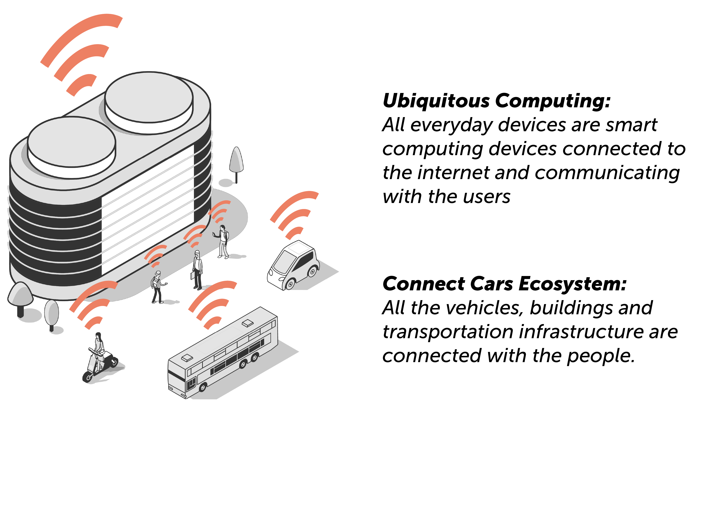

Case Study: Safety Distance Ring
I N T R O D U C T I O N
Guide : Mamata Rao
Duration : 4 weeks
Group : Individual
Place : NID 2018
Objective
To identify a problem in our daily life activity and come up with a soluiton based on Ubiquitous Computing or Calm Technology.
Overview
SDR is an augmented reality solution for enhancing our peripheral vision for driving a car. Since 2014, people have realised peripheral vision is equally important as our foveal vision while driving. The case study explores the problems faced in our vision concerning safety while driving.
R E S E A R C H
I took a qualitative approach to understand and identify problems in a daily activity. This approach gave me deeper insight into problems which we usually ignore on daily basis and it was interesting to find out different set of problems in road situations in India where usually you would find mixed traffic. I approached via these two ways-
1. Personal Interviews
2. Observational Method
Personas
I interviewed 10 people who varied in driving skills from advanced to novice.
The questionnaire targeted finding out problems based on-
1. Safety Distance 2. Vehicle-Vehicle Communication 3. High Risk Zones
Based on the insights I formed three personas in age group 20-30 years with different levels of diving skills and choice of interest in driving.
Key Findings
I tried to classified the key-findings based on the mode of conveying the information. Based on how put our attention in perceiving an informationn, it is classified in following two categories :
1. Peripheral Information (Notification)
Information in the periphery of the user, but requires her attention to interpret it.
2. Peripheral Display Information (Proximity)
Information which appears in the peripheral vision of the user and can still can interpreted..
The issue of Safety Distance in Mixed-Traffic
In my interviews and my observational study, I saw a common issue with Indian traffic system is the unorganised division traffic or "mixed-traffic". Due to poor management and control by authorities, vehicles usually don’t follow the safety distance rule and instead try to overtake or cross even when its not safe for other vehicles. Such situations usually creates a panic amongst other drivers. The misery doesn't end there, in cases where there are no footpaths, pedastrian are forced to walk on roads. Unluckily sometimes such situations turn out fatal for drivers or pedastrian. To my surprise, i saw new users were able to quote this problem, but experienced drivers have got used to it and most of the time they rely on their experience with their vehicle and eye-estimation even on high-speed.
The picture below depicts a typical scenario of a busy street with mixed-traffic.
Place: A busy crossing at Esplanade, Kolkata ; Source: Unknown
Scope of Work
Safety Distance is one of the major issues in mixed-traffic. Pedastrian and Two-wheelers are at higher risk and the situation worsens during night. The risk of hitting can be reduced if the driver can be notified or warned against breaking the safety distance. Here lies the biggest challenge about how to notify a driver when he is still driving.
Understaning Human Vision to decide design parameters :
For designing such a solution, it was necessary to understand how we use our vision during driving. From "blah blah paper", I came to know that a human uses both her peripheral and foveal vision to ancipate the obstacles and other vehicles on the road. THerefore I studied merits and shortcomings of both vision and tranformed them into my groundrules for the design.
Scope for Perifoveal Display
Data is visualised based on user’s viewing direction. Data in central vision is displayed in detail. Data which lies in peripheral vision are highlighted by movement and change in brightness as well as amount of detail and size. This concept of perifoveal display can be helpful in case of driving. Information can be prioritised and placed in foveal and peripheral vision respectively.

source : Perifoveal Display: Combining Foveal and Peripheral Vision in one Visualisation
B R I E F
"Designing a perifoveal interface to notify or alert the driver without distracting her from driving. The solution will primarily focus on "safety ditance" in the context of mixed-used traffic."
D E S I G N
The design solution can be found in a scenario where everything around us is a smart object. All the cars are connected with each other and they are aware of their location and nature of their surrounding. Therefore all the vehicles, people, transport facilites and buildings are a part of a big IOT systems and this scenario is called Connected Cars
Concepts
I tried to conceptualize as a physical or a virtual device. I found challenge in augmented reality medium because we see and perceive images in our foveal and peripheral vision differently. Therefore, I moved forward with the Concept-3 and found a scope to define how information can be shown in our physical world without distracting our attention all the time.Design through Scenarios

Sketching behaviour of safety markers in different SCENARIOS
Exploring the visuals for safety markers

Source: My notes on Safety Distance Ring